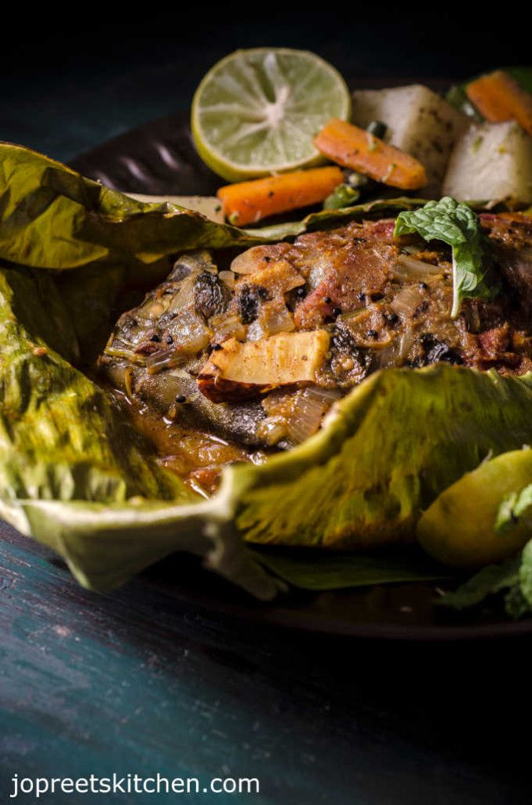

KIZHI PAROTTA:
Kizhi Parotta, also known as Kothu Parotta, is a popular South Indian street food dish made with shredded parottas (layered flatbread) tossed with a spicy mixture of vegetables, eggs, and/or meat. The term "kizhi" refers to the process of wrapping the parottas in a cloth and pounding them to create a shredded texture. Here's how you can make it:

INGREDIENTS:
- Parottas (You can either make them at home or use store-bought ones),
Mixed vegetables (such as onions, bell peppers, carrots, cabbage)
- Eggs (optional, for non-vegetarian version),
Cooked chicken or mutton (optional, for non-vegetarian version)
- Ginger-garlic paste,
Green chilies, chopped
- Curry leaves,
Turmeric powder
- Red chili powder,
Coriander powder
- Garam masala powder,
Salt to taste,
Oil or ghee,
Fresh coriander leaves for garnish
DIRECTIONS:
- Shred the Parottas: Take the Parottas and tear them into small pieces using your hands or crush them using a rolling pin wrapped in a clean cloth. Set aside.
Heat oil or ghee in a large pan or kadhai over medium heat.
- Add ginger-garlic paste, chopped green chilies, and curry leaves to the hot oil. Sauté for a minute until fragrant.
Add the mixed vegetables to the pan and sauté until they are slightly tender. If using cooked
- Push the vegetables to one side of the pan and crack the eggs into the empty space. Scramble the eggs until cooked through. Mix everything together in the pan.
- Add the shredded Parottas to the pan along with turmeric powder, red chili powder, coriander powder, garam masala powder, and salt to taste. Mix well until the spices are evenly distributed.
Cook the Kizhi Parotta mixture for a few more minutes, stirring occasionally, until everything is heated through and well combined.
Garnish with fresh coriander leaves and serve hot.
TIPS:
Kizhi Parotta is often enjoyed with raita or a side of spicy curry. It's a delicious and hearty dish that's perfect for breakfast, brunch, or as a quick meal anytime. Adjust the ingredients and spices according to your taste preferences. Enjoy your homemade Kizhi Parotta!
return to home